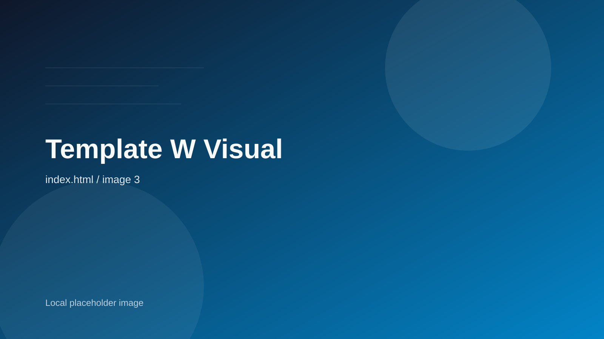

Reach
42
撮影地・滞在地・体験導線を、世界各地で設計しています。
Scene 01 / Panorama intro
Wide Horizon は、空間の広がりや余白の美しさをそのまま体験へ変えるブランドです。旅、建築、ホスピタリティの世界観を、静かな没入感とともに届けます。
Reach
42
撮影地・滞在地・体験導線を、世界各地で設計しています。
Stay
5D
短期滞在でも深い体験になるよう、旅程を編集します。
Focus
1
「何を感じて帰るか」その一点から逆算します。

Scene note
Boundless horizon,carefully directed.
Scene 02 / Destinations
ただ豪華なだけではなく、空間が語る物語まで含めて選定する。それが Wide Horizon のキュレーションです。
North America
視界の抜けと静けさを両立する、長距離移動型のパノラマ体験です。

Maldivian Azure
水平線の静けさを主役にした、滞在型のシグネチャー体験です。
Scene 03 / Experience design
移動、滞在、光、音、余白。すべてが一連のシーンとしてつながるよう、旅の設計を映像的に組み立てています。
Chapter 01
移動そのものが体験になるよう、ルートに意味を持たせます。
Chapter 02
宿泊先は設備だけでなく、視界の抜けと静けさで選びます。
Chapter 03
写真や言葉として残る余白まで、最後に設計します。
End titles